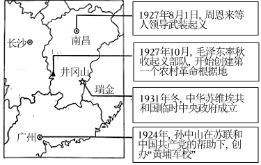
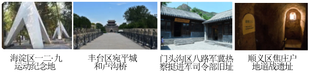

2023年北京市中考历史试卷 · 选择题 第11、12、13、14、15题
11．（1.5分）一位美国教育家于1919年5月来华，6月他在北京给女儿写信：想想我们国内14岁以上的孩子，有谁思考国家的命运？而中国学生负起政治改革运动的领导责任，这实在是一个了不起的国家。材料说明这场运动（ ）
A．以《新青年》作为重要阵地
B．以先进青年知识分子为先锋
C．遭到北洋政府的镇压
D．引发实业救国的热潮
12．（1.5分）如图示意图标题应是（ ）

A．新民主主义革命的开始B．国共两党的第一次合作
C．从国共合作到国共对立D．反“围剿”斗争取得胜利
13．（1.5分）某校学生考察了如图近代历史遗址，考察的主题为（ ）

A．局部抗战的开始B．正面战场的抗战
C．北京地区的抗日斗争D．古都北平的和平解放
14．（1.5分）竹枝词是一种以吟咏社会风土人情为主的文学体裁。20世纪初电车刚进入北京时，有竹枝词写道：“电车初试人都怕，说是将来肇祸多。”后来（电）车中称稳便，儿童指点陆行舟。”这说明（ ）
A．人们对新式交通工具由排斥到认可
B．沿海地区更易感受到社会生活变化
C．居民对电车破坏自然环境强烈不满
D．中国近代民族工业在夹缝中求生存
15．（1.5分）15世纪，欧洲学者、政治家甚至普通民众都流行写自传，这一时期自传作品的数量比之前近千年所写自传的总和还要多。这一历史现象反映出当时（ ）
A．租地农场开始出现B．人文主义思潮流行
C．绘画艺术蓬勃发展D．近代自然科学奠基